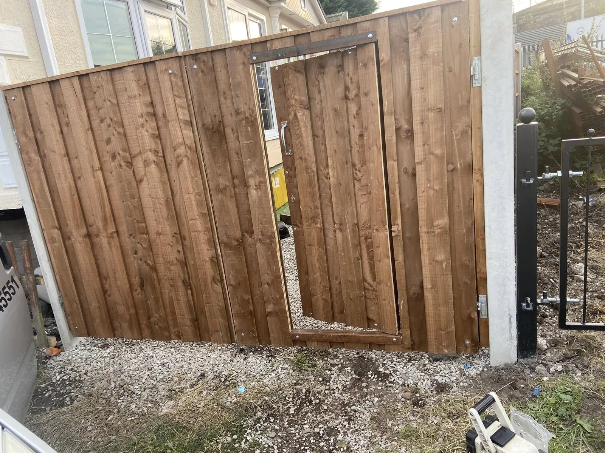

MANCHESTER LANDSCAPE AND GROUNDWORX LTD · GREATER MANCHESTER
Greater Manchester.
Your next outdoor project.
Local enquiries for driveways, patios, garden landscaping, groundworks and 3D designs.
Where we work.
We take enquiries across Greater Manchester, including Manchester, Manchester, Manchester, Croft, Manchester, Manchester, Manchester, Manchester and Manchester.
Send your postcode and a short description of the work so we can confirm availability. Include access details, approximate dimensions and any preferred timing.
FREE PROJECT QUOTE
Let’s talk about your outdoor space.
Tell us what you have in mind. This form opens a WhatsApp draft with all your details, ready for you to review, add photos and send.